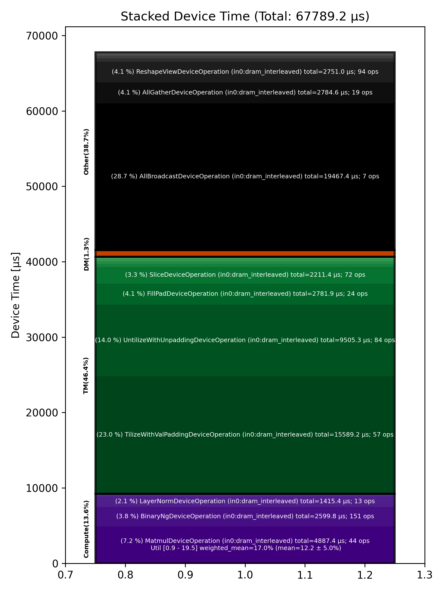

🚀 Performance Report 🚀 ======================== ID Total % Bound OP Code Device Device Time Op-to-Op Gap Cores DRAM DRAM % FLOPs FLOPs % Math Fidelity ----------------------------------------------------------------------------------------------------------------------------------------------------------------------------- 2 0.0 % TilizeWithValPaddingDeviceOperation 24 7 μs 1 INT32 => INT32 65 46.0 % TypecastDeviceOperation 8 2 μs 3,932,985 μs 1 INT32 => UINT32 84 0.0 % ReshapeViewDeviceOperation 22 4 μs 319 μs 1 UINT32 => UINT32 112 0.0 % UntilizeWithUnpaddingDeviceOperation 5 2 μs 748 μs 1 UINT32 => UINT32 138 0.0 % EmbeddingsDeviceOperation 28 6 μs 152 μs 16 UINT32, BF16 => BF16 181 0.0 % TilizeWithValPaddingDeviceOperation 23 12 μs 375 μs 45 BF16 => BF16 216 0.0 % LayerNormDeviceOperation 13 108 μs 376 μs 1 BF16, BF16 => BF16 242 0.0 % SLOW MatmulDeviceOperation 32 x 2880 x 512 15 42 μs 1,087 μs 16 40 GB/s 14.0 % 2.2 TFLOPs 6.8 % HiFi2 BF16 x BFP8 => BF16 262 0.0 % ReshapeViewDeviceOperation 3 13 μs 143 μs 72 BF16 => BF16 310 0.0 % SliceDeviceOperation 15 5 μs 247 μs 72 BF16 => BF16 332 0.0 % TilizeWithValPaddingDeviceOperation 30 7 μs 338 μs 1 INT32 => INT32 379 0.0 % TypecastDeviceOperation 17 2 μs 323 μs 1 INT32 => FP32 406 0.0 % SLOW MatmulDeviceOperation 32 x 32 x 32 24 7 μs 644 μs 1 2 GB/s 0.6 % 0.0 TFLOPs 0.9 % HiFi4 FP32 x FP32 => FP32 436 0.0 % UnaryDeviceOperation 22 3 μs 178 μs 1 FP32 => FP32 474 0.0 % ReshapeViewDeviceOperation 16 6 μs 254 μs 1 FP32 => FP32 498 0.0 % BinaryNgDeviceOperation 20 8 μs 128 μs 72 FP32, FP32 => FP32 519 0.0 % TypecastDeviceOperation 2 2 μs 212 μs 1 FP32 => BF16 571 0.0 % BinaryNgDeviceOperation 17 16 μs 132 μs 72 BF16, BF16 => BF16 602 0.0 % SliceDeviceOperation 16 5 μs 214 μs 72 BF16 => BF16 615 0.0 % UnaryDeviceOperation 2 3 μs 494 μs 1 FP32 => FP32 662 0.0 % ReshapeViewDeviceOperation 15 6 μs 270 μs 1 FP32 => FP32 694 0.0 % BinaryNgDeviceOperation 15 8 μs 308 μs 72 FP32, FP32 => FP32 722 0.0 % TypecastDeviceOperation 20 2 μs 82 μs 1 FP32 => BF16 754 0.0 % BinaryNgDeviceOperation 20 15 μs 173 μs 72 BF16, BF16 => BF16 799 0.0 % BinaryNgDeviceOperation 10 7 μs 255 μs 72 BF16, BF16 => BF16 824 0.0 % BinaryNgDeviceOperation 13 16 μs 266 μs 72 BF16, BF16 => BF16 862 0.0 % BinaryNgDeviceOperation 11 15 μs 220 μs 72 BF16, BF16 => BF16 881 0.0 % BinaryNgDeviceOperation 4 7 μs 254 μs 72 BF16, BF16 => BF16 917 0.0 % ConcatDeviceOperation 23 8 μs 283 μs 72 BF16, BF16 => BF16 957 0.0 % SLOW MatmulDeviceOperation 32 x 2880 x 64 20 30 μs 614 μs 2 12 GB/s 4.3 % 0.4 TFLOPs 9.6 % HiFi2 BF16 x BFP8 => BF16 973 0.0 % ReshapeViewDeviceOperation 31 4 μs 109 μs 32 BF16 => BF16 1025 0.0 % SliceDeviceOperation 8 2 μs 188 μs 16 BF16 => BF16 1052 0.0 % PermuteDeviceOperation 18 4 μs 251 μs 16 BF16 => BF16 1088 0.0 % BinaryNgDeviceOperation 9 5 μs 271 μs 72 BF16, BF16 => BF16 1112 0.0 % SliceDeviceOperation 13 2 μs 266 μs 16 BF16 => BF16 1141 0.0 % PermuteDeviceOperation 23 4 μs 256 μs 16 BF16 => BF16 1164 0.0 % BinaryNgDeviceOperation 30 5 μs 92 μs 72 BF16, BF16 => BF16 1204 0.0 % BinaryNgDeviceOperation 22 3 μs 178 μs 72 BF16, BF16 => BF16 1240 0.0 % BinaryNgDeviceOperation 13 5 μs 102 μs 72 BF16, BF16 => BF16 1252 0.0 % BinaryNgDeviceOperation 26 5 μs 156 μs 72 BF16, BF16 => BF16 1290 0.0 % BinaryNgDeviceOperation 28 3 μs 93 μs 72 BF16, BF16 => BF16 1342 0.0 % ConcatDeviceOperation 11 2 μs 168 μs 32 BF16, BF16 => BF16 1374 0.0 % RepeatDeviceOperation 11 2 μs 264 μs 72 INT32 => INT32 1380 0.0 % InterleavedToShardedDeviceOperation 26 1 μs 308 μs 16 BF16 => BF16 1418 0.0 % PagedUpdateCacheDeviceOperation 28 4 μs 220 μs 16 BF16, BF16 => BF16 1442 0.0 % TilizeWithValPaddingDeviceOperation 24 7 μs 113 μs 1 INT32 => INT32 1477 0.0 % BinaryNgDeviceOperation 27 3 μs 184 μs 72 INT32, INT32 => INT32 1507 0.0 % BinaryNgDeviceOperation 25 10 μs 409 μs 72 INT32, INT32 => BF16 1551 0.0 % TilizeWithValPaddingDeviceOperation 6 4 μs 242 μs 1 BF16 => BF16 1594 0.0 % BinaryNgDeviceOperation 16 6 μs 267 μs 72 BF16, BF16 => BF16 1617 0.0 % TilizeWithValPaddingDeviceOperation 4 7 μs 233 μs 1 INT32 => INT32 1660 0.0 % BinaryNgDeviceOperation 18 10 μs 243 μs 72 INT32, INT32 => BF16 1681 0.0 % BinaryNgDeviceOperation 4 4 μs 123 μs 72 BF16, BF16 => BF16 1728 0.0 % TernaryDeviceOperation 9 25 μs 181 μs 72 BF16, BF16 => BF16 1746 0.0 % SLOW MatmulDeviceOperation 32 x 2880 x 64 15 30 μs 503 μs 2 12 GB/s 4.3 % 0.4 TFLOPs 9.6 % HiFi2 BF16 x BFP8 => BF16 1780 0.0 % ReshapeViewDeviceOperation 22 3 μs 122 μs 32 BF16 => BF16 1821 0.0 % PermuteDeviceOperation 19 4 μs 180 μs 32 BF16 => BF16 1842 0.0 % InterleavedToShardedDeviceOperation 20 1 μs 126 μs 16 BF16 => BF16 1866 0.0 % PagedUpdateCacheDeviceOperation 28 4 μs 134 μs 16 BF16, BF16 => BF16 1904 0.0 % PermuteDeviceOperation 5 8 μs 105 μs 72 BF16 => BF16 1938 0.0 % UntilizeWithUnpaddingDeviceOperation 20 3 μs 168 μs 1 BF16 => BF16 1985 0.0 % RepeatDeviceOperation 8 2 μs 267 μs 72 BF16 => BF16 2002 0.0 % TilizeWithValPaddingDeviceOperation 20 10 μs 257 μs 1 BF16 => BF16 2034 0.0 % SdpaDecodeDeviceOperation 20 16 μs 356 μs 72 BF16, BF16 => BF16 2068 0.0 % PermuteDeviceOperation 22 22 μs 151 μs 72 BF16 => BF16 2096 0.0 % ReshapeViewDeviceOperation 5 14 μs 247 μs 16 BF16 => BF16 2123 0.0 % SLOW MatmulDeviceOperation 32 x 512 x 2880 18 15 μs 598 μs 45 112 GB/s 39.1 % 6.3 TFLOPs 13.6 % HiFi4 BF16 x BFP8 => BF16 2161 0.0 % AllGatherDeviceOperation 0 82 μs 500 μs 24 BF16 => BF16 2189 0.0 % FillPadDeviceOperation 31 155 μs 67 μs 8 BF16 => BF16 2229 0.0 % FastReduceNCDeviceOperation 23 10 μs 29 μs 72 BF16 => BF16 2260 0.0 % SliceDeviceOperation 22 3 μs 244 μs 72 BF16 => BF16 2284 0.0 % BinaryNgDeviceOperation 30 5 μs 292 μs 72 BF16, BF16 => BF16 2336 0.0 % BinaryNgDeviceOperation 9 5 μs 261 μs 72 BF16, BF16 => BF16 2365 0.0 % ReshapeViewDeviceOperation 19 45 μs 227 μs 72 BF16 => BF16 2398 0.0 % LayerNormDeviceOperation 11 110 μs 226 μs 16 BF16, BF16 => BF16 2429 0.0 % ReshapeViewDeviceOperation 19 29 μs 153 μs 72 BF16 => BF16 2454 0.0 % UntilizeWithUnpaddingDeviceOperation 15 9 μs 341 μs 45 BF16 => BF16 2489 0.0 % RepeatDeviceOperation 12 9 μs 236 μs 72 BF16 => BF16 2506 0.0 % TilizeWithValPaddingDeviceOperation 28 39 μs 101 μs 45 BF16 => BF16 2557 0.0 % DRAM MatmulDeviceOperation 32 x 2880 x 5760 20 359 μs 530 μs 60 191 GB/s 66.2 % 11.8 TFLOPs 19.2 % HiFi4 BF16 x BFP8 => BF16 2592 0.0 % BinaryNgDeviceOperation 9 22 μs 1 μs 72 BF16, BF16 => BF16 2597 0.0 % UntilizeWithUnpaddingDeviceOperation 27 32 μs 1 μs 60 BF16 => BF16 2657 0.0 % SliceDeviceOperation 8 155 μs 231 μs 64 BF16 => BF16 2678 0.0 % TilizeWithValPaddingDeviceOperation 15 39 μs 87 μs 45 BF16 => BF16 2700 0.0 % UnaryDeviceOperation 30 9 μs 65 μs 72 BF16 => BF16 2734 0.0 % BinaryNgDeviceOperation 7 15 μs 181 μs 72 BF16, BF16 => BF16 2781 0.0 % UntilizeWithUnpaddingDeviceOperation 19 32 μs 216 μs 60 BF16 => BF16 2815 0.0 % SliceDeviceOperation 10 155 μs 220 μs 64 BF16 => BF16 2820 0.0 % TilizeWithValPaddingDeviceOperation 26 38 μs 1 μs 45 BF16 => BF16 2880 0.0 % UnaryDeviceOperation 9 9 μs 66 μs 72 BF16 => BF16 2896 0.0 % BinaryNgDeviceOperation 5 16 μs 267 μs 72 BF16, BF16 => BF16 2943 0.0 % UnaryDeviceOperation 10 10 μs 227 μs 72 BF16 => BF16 2955 0.0 % BinaryNgDeviceOperation 29 12 μs 246 μs 72 BF16, BF16 => BF16 2982 0.0 % BinaryNgDeviceOperation 3 12 μs 253 μs 72 BF16, BF16 => BF16 3016 0.0 % SLOW MatmulDeviceOperation 32 x 2880 x 2880 1 235 μs 621 μs 45 148 GB/s 51.2 % 9.0 TFLOPs 19.5 % HiFi4 BF16 x BFP8 => BF16 3059 0.0 % BinaryNgDeviceOperation 21 11 μs 1 μs 72 BF16, BF16 => BF16 3092 0.0 % ReshapeViewDeviceOperation 22 159 μs 115 μs 72 BF16 => BF16 3126 0.0 % TypecastDeviceOperation 15 56 μs 118 μs 72 BF16 => FP32 3166 0.0 % ReshapeViewDeviceOperation 11 47 μs 204 μs 72 FP32 => FP32 3185 0.0 % SLOW MatmulDeviceOperation 32 x 2880 x 32 0 33 μs 459 μs 1 14 GB/s 4.9 % 0.2 TFLOPs 8.7 % HiFi2 FP32 x BFP8 => FP32 3226 0.0 % TypecastDeviceOperation 16 2 μs 104 μs 1 FP32 => BF16 3260 0.0 % FillPadDeviceOperation 18 3 μs 163 μs 1 BF16 => BF16 3288 0.0 % PadDeviceOperation 13 35 μs 110 μs 2 BF16 => BF16 3317 0.0 % FillPadDeviceOperation 23 5 μs 126 μs 1 BF16 => BF16 3337 0.0 % TopKDeviceOperation 0 44 μs 103 μs 1 BF16 => BF16 3366 0.0 % SliceDeviceOperation 3 1 μs 212 μs 1 BF16 => BF16 3394 0.0 % SliceDeviceOperation 24 1 μs 252 μs 1 UINT16 => UINT16 3446 0.0 % TypecastDeviceOperation 15 2 μs 262 μs 1 UINT16 => INT32 3486 0.0 % ReshapeViewDeviceOperation 11 5 μs 253 μs 16 INT32 => INT32 3510 0.0 % UntilizeWithUnpaddingDeviceOperation 15 3 μs 259 μs 16 INT32 => INT32 3530 0.0 % UntilizeWithUnpaddingDeviceOperation 28 3 μs 238 μs 16 INT32 => INT32 3579 0.0 % PermuteDeviceOperation 17 3 μs 86 μs 16 INT32 => INT32 3610 0.0 % PermuteDeviceOperation 16 3 μs 176 μs 16 INT32 => INT32 3618 0.0 % ConcatDeviceOperation 24 2 μs 85 μs 32 INT32, INT32 => INT32 3655 0.0 % PermuteDeviceOperation 2 3 μs 176 μs 16 INT32 => INT32 3711 0.0 % TilizeWithValPaddingDeviceOperation 10 7 μs 88 μs 16 INT32 => INT32 3740 0.0 % SoftmaxDeviceOperation 18 24 μs 198 μs 72 BF16 => BF16 3761 0.0 % AllGatherDeviceOperation 0 63 μs 639 μs 24 INT32 => INT32 3778 0.0 % AllBroadcastDeviceOperation 8 51 μs 272 μs 4 BF16 => BF16 3817 0.0 % UntilizeWithUnpaddingDeviceOperation 0 7 μs 117 μs 1 BF16 => BF16 3867 0.0 % UntilizeWithUnpaddingDeviceOperation 17 7 μs 144 μs 1 BF16 => BF16 3881 0.0 % UntilizeWithUnpaddingDeviceOperation 0 7 μs 72 μs 1 BF16 => BF16 3913 0.0 % UntilizeWithUnpaddingDeviceOperation 0 7 μs 159 μs 1 BF16 => BF16 3959 0.0 % ConcatDeviceOperation 14 2 μs 87 μs 64 BF16, BF16 => BF16 3992 0.0 % TilizeWithValPaddingDeviceOperation 13 5 μs 201 μs 2 BF16 => BF16 4011 0.0 % ReshapeViewDeviceOperation 29 10 μs 273 μs 8 INT32 => INT32 4055 0.0 % SliceDeviceOperation 14 2 μs 248 μs 8 INT32 => INT32 4072 0.0 % UntilizeWithUnpaddingDeviceOperation 1 14 μs 254 μs 8 INT32 => INT32 4114 0.0 % SliceDeviceOperation 20 4 μs 282 μs 72 INT32 => INT32 4159 0.0 % TilizeWithValPaddingDeviceOperation 10 8 μs 220 μs 8 INT32 => INT32 4181 0.0 % BinaryNgDeviceOperation 23 11 μs 125 μs 72 INT32, INT32 => INT32 4224 0.0 % BinaryNgDeviceOperation 9 3 μs 143 μs 72 INT32, INT32 => INT32 4249 0.0 % ReshapeViewDeviceOperation 12 7 μs 255 μs 8 INT32 => INT32 4264 0.0 % ReshapeViewDeviceOperation 1 4 μs 309 μs 8 BF16 => BF16 4317 0.0 % UntilizeWithUnpaddingDeviceOperation 19 7 μs 260 μs 1 INT32 => INT32 4353 0.0 % UntilizeWithUnpaddingDeviceOperation 8 6 μs 242 μs 1 BF16 => BF16 4362 0.0 % ScatterDeviceOperation 28 60 μs 265 μs 1 BF16, INT32 => BF16 4415 0.0 % TilizeWithValPaddingDeviceOperation 10 5 μs 203 μs 64 BF16 => BF16 4437 0.0 % ReshapeViewDeviceOperation 23 23 μs 233 μs 2 BF16 => BF16 4452 0.0 % UntilizeDeviceOperation 26 4 μs 88 μs 2 BF16 => BF16 4496 0.0 % MeshPartitionDeviceOperation 2 2 μs 567 μs 16 BF16 => BF16 4533 0.0 % MeshPartitionDeviceOperation 29 2 μs 519 μs 16 BF16 => BF16 4555 0.0 % TilizeWithValPaddingDeviceOperation 29 4 μs 133 μs 1 BF16 => BF16 4599 0.0 % TransposeDeviceOperation 14 2 μs 184 μs 72 BF16 => BF16 4614 0.0 % ReshapeViewDeviceOperation 3 8 μs 258 μs 64 BF16 => BF16 4657 0.0 % BinaryNgDeviceOperation 4 127 μs 263 μs 72 BF16, BF16 => BF16 4695 0.0 % FillPadDeviceOperation 14 301 μs 126 μs 64 BF16 => BF16 4730 0.0 % FastReduceNCDeviceOperation 16 67 μs 1 μs 72 BF16 => BF16 4740 0.0 % SliceDeviceOperation 26 34 μs 151 μs 72 BF16 => BF16 4785 0.0 % ReduceScatterDeviceOperation 0 145 μs 838 μs 24 BF16 => BF16 4817 0.0 % AllGatherDeviceOperation 0 123 μs 389 μs 40 BF16 => BF16 4843 0.0 % BinaryNgDeviceOperation 29 49 μs 20 μs 72 BF16, BF16 => BF16 4873 0.0 % ReshapeViewDeviceOperation 0 29 μs 136 μs 72 BF16 => BF16 4919 0.0 % LayerNormDeviceOperation 14 108 μs 212 μs 1 BF16, BF16 => BF16 4959 0.0 % SLOW MatmulDeviceOperation 32 x 2880 x 512 27 42 μs 418 μs 16 40 GB/s 14.0 % 2.3 TFLOPs 6.9 % HiFi2 BF16 x BFP8 => BF16 4969 0.0 % ReshapeViewDeviceOperation 0 13 μs 93 μs 72 BF16 => BF16 5009 0.0 % SliceDeviceOperation 4 5 μs 170 μs 72 BF16 => BF16 5055 0.0 % BinaryNgDeviceOperation 10 16 μs 277 μs 72 BF16, BF16 => BF16 5076 0.0 % SliceDeviceOperation 22 5 μs 235 μs 72 BF16 => BF16 5105 0.0 % BinaryNgDeviceOperation 4 15 μs 270 μs 72 BF16, BF16 => BF16 5135 0.0 % BinaryNgDeviceOperation 6 7 μs 268 μs 72 BF16, BF16 => BF16 5178 0.0 % BinaryNgDeviceOperation 16 16 μs 340 μs 72 BF16, BF16 => BF16 5187 0.0 % BinaryNgDeviceOperation 25 15 μs 244 μs 72 BF16, BF16 => BF16 5225 0.0 % BinaryNgDeviceOperation 0 7 μs 241 μs 72 BF16, BF16 => BF16 5254 0.0 % ConcatDeviceOperation 3 7 μs 263 μs 72 BF16, BF16 => BF16 5301 0.0 % SLOW MatmulDeviceOperation 32 x 2880 x 64 29 30 μs 521 μs 2 12 GB/s 4.3 % 0.4 TFLOPs 9.6 % HiFi2 BF16 x BFP8 => BF16 5336 0.0 % ReshapeViewDeviceOperation 13 3 μs 116 μs 32 BF16 => BF16 5364 0.0 % SliceDeviceOperation 22 2 μs 178 μs 16 BF16 => BF16 5393 0.0 % PermuteDeviceOperation 4 4 μs 242 μs 16 BF16 => BF16 5431 0.0 % BinaryNgDeviceOperation 14 5 μs 108 μs 72 BF16, BF16 => BF16 5448 0.0 % SliceDeviceOperation 1 2 μs 155 μs 16 BF16 => BF16 5494 0.0 % PermuteDeviceOperation 15 4 μs 86 μs 16 BF16 => BF16 5523 0.0 % BinaryNgDeviceOperation 21 5 μs 172 μs 72 BF16, BF16 => BF16 5558 0.0 % BinaryNgDeviceOperation 15 3 μs 266 μs 72 BF16, BF16 => BF16 5573 0.0 % BinaryNgDeviceOperation 27 5 μs 104 μs 72 BF16, BF16 => BF16 5611 0.0 % BinaryNgDeviceOperation 29 5 μs 168 μs 72 BF16, BF16 => BF16 5653 0.0 % BinaryNgDeviceOperation 23 2 μs 249 μs 72 BF16, BF16 => BF16 5685 0.0 % ConcatDeviceOperation 23 2 μs 102 μs 32 BF16, BF16 => BF16 5722 0.0 % InterleavedToShardedDeviceOperation 16 1 μs 179 μs 16 BF16 => BF16 5750 0.0 % PagedUpdateCacheDeviceOperation 15 4 μs 251 μs 16 BF16, BF16 => BF16 5768 0.0 % TernaryDeviceOperation 1 25 μs 275 μs 72 BF16, BF16 => BF16 5813 0.0 % SLOW MatmulDeviceOperation 32 x 2880 x 64 29 30 μs 435 μs 2 12 GB/s 4.3 % 0.4 TFLOPs 9.6 % HiFi2 BF16 x BFP8 => BF16 5850 0.0 % ReshapeViewDeviceOperation 16 3 μs 95 μs 32 BF16 => BF16 5864 0.0 % PermuteDeviceOperation 1 4 μs 193 μs 32 BF16 => BF16 5895 0.0 % InterleavedToShardedDeviceOperation 2 1 μs 263 μs 16 BF16 => BF16 5937 0.0 % PagedUpdateCacheDeviceOperation 4 4 μs 228 μs 16 BF16, BF16 => BF16 5971 0.0 % PermuteDeviceOperation 21 8 μs 102 μs 72 BF16 => BF16 5996 0.0 % UntilizeWithUnpaddingDeviceOperation 30 4 μs 164 μs 1 BF16 => BF16 6023 0.0 % RepeatDeviceOperation 2 1 μs 91 μs 72 BF16 => BF16 6066 0.0 % TilizeWithValPaddingDeviceOperation 20 10 μs 177 μs 1 BF16 => BF16 6100 0.0 % SdpaDecodeDeviceOperation 22 17 μs 424 μs 72 BF16, BF16 => BF16 6138 0.0 % PermuteDeviceOperation 16 22 μs 146 μs 72 BF16 => BF16 6163 0.0 % ReshapeViewDeviceOperation 21 14 μs 74 μs 16 BF16 => BF16 6208 0.0 % SLOW MatmulDeviceOperation 32 x 512 x 2880 19 15 μs 494 μs 45 113 GB/s 39.1 % 6.3 TFLOPs 13.6 % HiFi4 BF16 x BFP8 => BF16 6225 0.0 % AllGatherDeviceOperation 0 63 μs 349 μs 24 BF16 => BF16 6243 0.0 % FillPadDeviceOperation 25 155 μs 18 μs 8 BF16 => BF16 6298 0.0 % FastReduceNCDeviceOperation 16 10 μs 35 μs 72 BF16 => BF16 6306 0.0 % SliceDeviceOperation 24 3 μs 81 μs 72 BF16 => BF16 6351 0.0 % BinaryNgDeviceOperation 6 5 μs 189 μs 72 BF16, BF16 => BF16 6396 0.0 % ReshapeViewDeviceOperation 18 45 μs 237 μs 72 BF16 => BF16 6414 0.0 % BinaryNgDeviceOperation 7 49 μs 221 μs 72 BF16, BF16 => BF16 6450 0.0 % LayerNormDeviceOperation 20 110 μs 218 μs 16 BF16, BF16 => BF16 6481 0.0 % ReshapeViewDeviceOperation 4 29 μs 155 μs 72 BF16 => BF16 6524 0.0 % UntilizeWithUnpaddingDeviceOperation 18 9 μs 216 μs 45 BF16 => BF16 6535 0.0 % RepeatDeviceOperation 2 9 μs 84 μs 72 BF16 => BF16 6593 0.0 % TilizeWithValPaddingDeviceOperation 8 39 μs 162 μs 45 BF16 => BF16 6618 0.0 % DRAM MatmulDeviceOperation 32 x 2880 x 5760 25 359 μs 504 μs 60 191 GB/s 66.3 % 11.8 TFLOPs 19.2 % HiFi4 BF16 x BFP8 => BF16 6646 0.0 % BinaryNgDeviceOperation 15 22 μs 1 μs 72 BF16, BF16 => BF16 6686 0.0 % UntilizeWithUnpaddingDeviceOperation 11 32 μs 1 μs 60 BF16 => BF16 6701 0.0 % SliceDeviceOperation 31 155 μs 157 μs 64 BF16 => BF16 6742 0.0 % TilizeWithValPaddingDeviceOperation 15 39 μs 1 μs 45 BF16 => BF16 6766 0.0 % UnaryDeviceOperation 7 9 μs 67 μs 72 BF16 => BF16 6797 0.0 % BinaryNgDeviceOperation 31 15 μs 113 μs 72 BF16, BF16 => BF16 6841 0.0 % UntilizeWithUnpaddingDeviceOperation 12 32 μs 144 μs 60 BF16 => BF16 6867 0.0 % SliceDeviceOperation 21 155 μs 224 μs 64 BF16 => BF16 6906 0.0 % TilizeWithValPaddingDeviceOperation 16 38 μs 1 μs 45 BF16 => BF16 6943 0.0 % UnaryDeviceOperation 10 9 μs 74 μs 72 BF16 => BF16 6969 0.0 % BinaryNgDeviceOperation 12 16 μs 106 μs 72 BF16, BF16 => BF16 7009 0.0 % UnaryDeviceOperation 8 11 μs 258 μs 72 BF16 => BF16 7041 0.0 % BinaryNgDeviceOperation 8 12 μs 249 μs 72 BF16, BF16 => BF16 7059 0.0 % BinaryNgDeviceOperation 21 12 μs 246 μs 72 BF16, BF16 => BF16 7075 0.0 % SLOW MatmulDeviceOperation 32 x 2880 x 2880 9 235 μs 504 μs 45 147 GB/s 51.1 % 9.0 TFLOPs 19.5 % HiFi4 BF16 x BFP8 => BF16 7118 0.0 % BinaryNgDeviceOperation 7 11 μs 1 μs 72 BF16, BF16 => BF16 7148 0.0 % ReshapeViewDeviceOperation 30 159 μs 71 μs 72 BF16 => BF16 7177 0.0 % TypecastDeviceOperation 0 58 μs 101 μs 72 BF16 => FP32 7223 0.0 % ReshapeViewDeviceOperation 14 47 μs 207 μs 72 FP32 => FP32 7250 0.0 % SLOW MatmulDeviceOperation 32 x 2880 x 32 15 33 μs 423 μs 1 14 GB/s 4.9 % 0.2 TFLOPs 8.8 % HiFi2 FP32 x BFP8 => FP32 7293 0.0 % TypecastDeviceOperation 19 2 μs 80 μs 1 FP32 => BF16 7298 0.0 % FillPadDeviceOperation 24 3 μs 243 μs 1 BF16 => BF16 7331 0.0 % PadDeviceOperation 25 35 μs 93 μs 2 BF16 => BF16 7372 0.0 % FillPadDeviceOperation 30 5 μs 288 μs 1 BF16 => BF16 7419 0.0 % TopKDeviceOperation 17 44 μs 96 μs 1 BF16 => BF16 7426 0.0 % SliceDeviceOperation 24 1 μs 137 μs 1 BF16 => BF16 7459 0.0 % SliceDeviceOperation 25 1 μs 90 μs 1 UINT16 => UINT16 7520 0.0 % TypecastDeviceOperation 9 2 μs 183 μs 1 UINT16 => INT32 7533 0.0 % ReshapeViewDeviceOperation 31 5 μs 95 μs 16 INT32 => INT32 7557 0.0 % UntilizeWithUnpaddingDeviceOperation 27 3 μs 178 μs 16 INT32 => INT32 7601 0.0 % UntilizeWithUnpaddingDeviceOperation 4 3 μs 249 μs 16 INT32 => INT32 7643 0.0 % PermuteDeviceOperation 17 3 μs 86 μs 16 INT32 => INT32 7680 0.0 % PermuteDeviceOperation 9 3 μs 176 μs 16 INT32 => INT32 7693 0.0 % ConcatDeviceOperation 31 2 μs 82 μs 32 INT32, INT32 => INT32 7739 0.0 % PermuteDeviceOperation 17 3 μs 177 μs 16 INT32 => INT32 7751 0.0 % TilizeWithValPaddingDeviceOperation 2 7 μs 86 μs 16 INT32 => INT32 7797 0.0 % SoftmaxDeviceOperation 23 24 μs 200 μs 72 BF16 => BF16 7825 0.0 % AllGatherDeviceOperation 0 56 μs 581 μs 24 INT32 => INT32 7842 0.0 % AllBroadcastDeviceOperation 8 44 μs 243 μs 4 BF16 => BF16 7893 0.0 % UntilizeWithUnpaddingDeviceOperation 23 7 μs 99 μs 1 BF16 => BF16 7918 0.0 % UntilizeWithUnpaddingDeviceOperation 7 7 μs 204 μs 1 BF16 => BF16 7952 0.0 % UntilizeWithUnpaddingDeviceOperation 5 7 μs 73 μs 1 BF16 => BF16 7994 0.0 % UntilizeWithUnpaddingDeviceOperation 16 7 μs 179 μs 1 BF16 => BF16 8002 0.0 % ConcatDeviceOperation 24 2 μs 82 μs 64 BF16, BF16 => BF16 8047 0.0 % TilizeWithValPaddingDeviceOperation 6 5 μs 179 μs 2 BF16 => BF16 8073 0.0 % ReshapeViewDeviceOperation 0 10 μs 113 μs 8 INT32 => INT32 8102 0.0 % SliceDeviceOperation 3 2 μs 139 μs 8 INT32 => INT32 8160 0.0 % UntilizeWithUnpaddingDeviceOperation 9 14 μs 250 μs 8 INT32 => INT32 8184 0.0 % SliceDeviceOperation 13 4 μs 112 μs 72 INT32 => INT32 8203 0.0 % TilizeWithValPaddingDeviceOperation 29 8 μs 134 μs 8 INT32 => INT32 8244 0.0 % BinaryNgDeviceOperation 22 11 μs 118 μs 72 INT32, INT32 => INT32 8258 0.0 % BinaryNgDeviceOperation 24 3 μs 151 μs 72 INT32, INT32 => INT32 8312 0.0 % ReshapeViewDeviceOperation 13 7 μs 245 μs 8 INT32 => INT32 8330 0.0 % ReshapeViewDeviceOperation 28 4 μs 100 μs 8 BF16 => BF16 8377 0.0 % UntilizeWithUnpaddingDeviceOperation 12 7 μs 151 μs 1 INT32 => INT32 8401 0.0 % UntilizeWithUnpaddingDeviceOperation 4 6 μs 86 μs 1 BF16 => BF16 8420 0.0 % ScatterDeviceOperation 26 60 μs 166 μs 1 BF16, INT32 => BF16 8471 0.0 % TilizeWithValPaddingDeviceOperation 14 5 μs 54 μs 64 BF16 => BF16 8485 0.0 % ReshapeViewDeviceOperation 27 23 μs 148 μs 2 BF16 => BF16 8536 0.0 % UntilizeDeviceOperation 13 4 μs 72 μs 2 BF16 => BF16 8556 0.0 % MeshPartitionDeviceOperation 3 2 μs 581 μs 16 BF16 => BF16 8608 0.0 % MeshPartitionDeviceOperation 19 2 μs 447 μs 16 BF16 => BF16 8615 0.0 % TilizeWithValPaddingDeviceOperation 2 4 μs 117 μs 1 BF16 => BF16 8649 0.0 % TransposeDeviceOperation 0 2 μs 193 μs 72 BF16 => BF16 8680 0.0 % ReshapeViewDeviceOperation 1 8 μs 104 μs 64 BF16 => BF16 8724 0.0 % BinaryNgDeviceOperation 22 127 μs 171 μs 72 BF16, BF16 => BF16 8749 0.0 % FillPadDeviceOperation 31 301 μs 139 μs 64 BF16 => BF16 8795 0.0 % FastReduceNCDeviceOperation 17 67 μs 1 μs 72 BF16 => BF16 8830 0.0 % SliceDeviceOperation 11 34 μs 1 μs 72 BF16 => BF16 8849 0.0 % ReduceScatterDeviceOperation 0 129 μs 343 μs 24 BF16 => BF16 8881 0.0 % AllGatherDeviceOperation 0 112 μs 295 μs 40 BF16 => BF16 8916 0.0 % BinaryNgDeviceOperation 22 49 μs 21 μs 72 BF16, BF16 => BF16 8947 0.0 % ReshapeViewDeviceOperation 21 29 μs 138 μs 72 BF16 => BF16 8993 0.0 % LayerNormDeviceOperation 8 108 μs 202 μs 1 BF16, BF16 => BF16 9019 0.0 % SLOW MatmulDeviceOperation 32 x 2880 x 512 4 42 μs 381 μs 16 40 GB/s 14.1 % 2.3 TFLOPs 6.9 % HiFi2 BF16 x BFP8 => BF16 9054 0.0 % ReshapeViewDeviceOperation 11 13 μs 74 μs 72 BF16 => BF16 9081 0.0 % SliceDeviceOperation 12 5 μs 181 μs 72 BF16 => BF16 9098 0.0 % BinaryNgDeviceOperation 28 16 μs 258 μs 72 BF16, BF16 => BF16 9152 0.0 % SliceDeviceOperation 9 5 μs 230 μs 72 BF16 => BF16 9155 0.0 % BinaryNgDeviceOperation 25 15 μs 263 μs 72 BF16, BF16 => BF16 9215 0.0 % BinaryNgDeviceOperation 10 7 μs 109 μs 72 BF16, BF16 => BF16 9243 0.0 % BinaryNgDeviceOperation 17 16 μs 220 μs 72 BF16, BF16 => BF16 9263 0.0 % BinaryNgDeviceOperation 6 15 μs 235 μs 72 BF16, BF16 => BF16 9292 0.0 % BinaryNgDeviceOperation 30 7 μs 243 μs 72 BF16, BF16 => BF16 9316 0.0 % ConcatDeviceOperation 26 7 μs 258 μs 72 BF16, BF16 => BF16 9367 0.0 % SLOW MatmulDeviceOperation 32 x 2880 x 64 31 30 μs 510 μs 2 13 GB/s 4.3 % 0.4 TFLOPs 9.6 % HiFi2 BF16 x BFP8 => BF16 9396 0.0 % ReshapeViewDeviceOperation 22 3 μs 136 μs 32 BF16 => BF16 9415 0.0 % SliceDeviceOperation 2 2 μs 173 μs 16 BF16 => BF16 9469 0.0 % PermuteDeviceOperation 19 4 μs 97 μs 16 BF16 => BF16 9488 0.0 % BinaryNgDeviceOperation 5 5 μs 172 μs 72 BF16, BF16 => BF16 9506 0.0 % SliceDeviceOperation 24 2 μs 249 μs 16 BF16 => BF16 9552 0.0 % PermuteDeviceOperation 5 4 μs 91 μs 16 BF16 => BF16 9599 0.0 % BinaryNgDeviceOperation 10 5 μs 182 μs 72 BF16, BF16 => BF16 9623 0.0 % BinaryNgDeviceOperation 14 3 μs 261 μs 72 BF16, BF16 => BF16 9642 0.0 % BinaryNgDeviceOperation 28 5 μs 104 μs 72 BF16, BF16 => BF16 9673 0.0 % BinaryNgDeviceOperation 0 5 μs 174 μs 72 BF16, BF16 => BF16 9722 0.0 % BinaryNgDeviceOperation 16 3 μs 337 μs 72 BF16, BF16 => BF16 9735 0.0 % ConcatDeviceOperation 2 2 μs 261 μs 32 BF16, BF16 => BF16 9774 0.0 % InterleavedToShardedDeviceOperation 7 1 μs 268 μs 16 BF16 => BF16 9802 0.0 % PagedUpdateCacheDeviceOperation 28 4 μs 252 μs 16 BF16, BF16 => BF16 9846 0.0 % SLOW MatmulDeviceOperation 32 x 2880 x 64 24 30 μs 509 μs 2 12 GB/s 4.3 % 0.4 TFLOPs 9.6 % HiFi2 BF16 x BFP8 => BF16 9874 0.0 % ReshapeViewDeviceOperation 20 3 μs 96 μs 32 BF16 => BF16 9910 0.0 % PermuteDeviceOperation 15 4 μs 166 μs 32 BF16 => BF16 9934 0.0 % InterleavedToShardedDeviceOperation 7 1 μs 264 μs 16 BF16 => BF16 9984 0.0 % PagedUpdateCacheDeviceOperation 9 4 μs 230 μs 16 BF16, BF16 => BF16 10017 0.0 % PermuteDeviceOperation 8 8 μs 104 μs 72 BF16 => BF16 10026 0.0 % SdpaDecodeDeviceOperation 28 16 μs 214 μs 72 BF16, BF16 => BF16 10078 0.0 % PermuteDeviceOperation 11 22 μs 165 μs 72 BF16 => BF16 10094 0.0 % ReshapeViewDeviceOperation 7 14 μs 72 μs 16 BF16 => BF16 10140 0.0 % SLOW MatmulDeviceOperation 32 x 512 x 2880 16 15 μs 409 μs 45 113 GB/s 39.1 % 6.3 TFLOPs 13.6 % HiFi4 BF16 x BFP8 => BF16 10161 0.0 % AllGatherDeviceOperation 0 64 μs 365 μs 24 BF16 => BF16 10203 0.0 % FillPadDeviceOperation 17 155 μs 27 μs 8 BF16 => BF16 10214 0.0 % FastReduceNCDeviceOperation 3 10 μs 27 μs 72 BF16 => BF16 10267 0.0 % SliceDeviceOperation 17 3 μs 83 μs 72 BF16 => BF16 10285 0.0 % BinaryNgDeviceOperation 31 5 μs 196 μs 72 BF16, BF16 => BF16 10323 0.0 % ReshapeViewDeviceOperation 21 45 μs 322 μs 72 BF16 => BF16 10352 0.0 % BinaryNgDeviceOperation 5 48 μs 229 μs 72 BF16, BF16 => BF16 10378 0.0 % LayerNormDeviceOperation 28 109 μs 225 μs 16 BF16, BF16 => BF16 10407 0.0 % ReshapeViewDeviceOperation 2 29 μs 149 μs 72 BF16 => BF16 10453 0.0 % UntilizeWithUnpaddingDeviceOperation 23 9 μs 220 μs 45 BF16 => BF16 10489 0.0 % RepeatDeviceOperation 12 9 μs 86 μs 72 BF16 => BF16 10506 0.0 % TilizeWithValPaddingDeviceOperation 28 39 μs 177 μs 45 BF16 => BF16 10561 0.0 % DRAM MatmulDeviceOperation 32 x 2880 x 5760 11 359 μs 385 μs 60 191 GB/s 66.3 % 11.8 TFLOPs 19.2 % HiFi4 BF16 x BFP8 => BF16 10570 0.0 % BinaryNgDeviceOperation 28 22 μs 1 μs 72 BF16, BF16 => BF16 10621 0.0 % UntilizeWithUnpaddingDeviceOperation 19 32 μs 1 μs 60 BF16 => BF16 10647 0.0 % SliceDeviceOperation 14 155 μs 306 μs 64 BF16 => BF16 10685 0.0 % TilizeWithValPaddingDeviceOperation 19 39 μs 102 μs 45 BF16 => BF16 10707 0.0 % UnaryDeviceOperation 21 8 μs 64 μs 72 BF16 => BF16 10725 0.0 % BinaryNgDeviceOperation 27 15 μs 171 μs 72 BF16, BF16 => BF16 10769 0.0 % UntilizeWithUnpaddingDeviceOperation 4 32 μs 242 μs 60 BF16 => BF16 10812 0.0 % SliceDeviceOperation 18 155 μs 220 μs 64 BF16 => BF16 10845 0.0 % TilizeWithValPaddingDeviceOperation 19 39 μs 1 μs 45 BF16 => BF16 10878 0.0 % UnaryDeviceOperation 11 8 μs 58 μs 72 BF16 => BF16 10896 0.0 % BinaryNgDeviceOperation 5 16 μs 92 μs 72 BF16, BF16 => BF16 10926 0.0 % UnaryDeviceOperation 7 11 μs 154 μs 72 BF16 => BF16 10966 0.0 % BinaryNgDeviceOperation 15 12 μs 98 μs 72 BF16, BF16 => BF16 11001 0.0 % BinaryNgDeviceOperation 12 12 μs 162 μs 72 BF16, BF16 => BF16 11011 0.0 % SLOW MatmulDeviceOperation 32 x 2880 x 2880 9 235 μs 479 μs 45 147 GB/s 51.2 % 9.0 TFLOPs 19.5 % HiFi4 BF16 x BFP8 => BF16 11048 0.0 % BinaryNgDeviceOperation 1 11 μs 1 μs 72 BF16, BF16 => BF16 11105 0.0 % ReshapeViewDeviceOperation 8 160 μs 109 μs 72 BF16 => BF16 11116 0.0 % TypecastDeviceOperation 30 56 μs 98 μs 72 BF16 => FP32 11166 0.0 % ReshapeViewDeviceOperation 11 47 μs 47 μs 72 FP32 => FP32 11196 0.0 % SLOW MatmulDeviceOperation 32 x 2880 x 32 16 33 μs 336 μs 1 14 GB/s 5.0 % 0.2 TFLOPs 8.8 % HiFi2 FP32 x BFP8 => FP32 11231 0.0 % TypecastDeviceOperation 10 2 μs 125 μs 1 FP32 => BF16 11243 0.0 % FillPadDeviceOperation 29 3 μs 182 μs 1 BF16 => BF16 11270 0.0 % PadDeviceOperation 3 35 μs 91 μs 2 BF16 => BF16 11306 0.0 % FillPadDeviceOperation 28 5 μs 123 μs 1 BF16 => BF16 11341 0.0 % TopKDeviceOperation 31 44 μs 98 μs 1 BF16 => BF16 11369 0.0 % SliceDeviceOperation 0 1 μs 136 μs 1 BF16 => BF16 11412 0.0 % SliceDeviceOperation 22 1 μs 98 μs 1 UINT16 => UINT16 11440 0.0 % TypecastDeviceOperation 5 2 μs 170 μs 1 UINT16 => INT32 11466 0.0 % ReshapeViewDeviceOperation 28 5 μs 96 μs 16 INT32 => INT32 11493 0.0 % UntilizeWithUnpaddingDeviceOperation 27 3 μs 179 μs 16 INT32 => INT32 11533 0.0 % UntilizeWithUnpaddingDeviceOperation 31 3 μs 337 μs 16 INT32 => INT32 11564 0.0 % PermuteDeviceOperation 30 3 μs 83 μs 16 INT32 => INT32 11597 0.0 % PermuteDeviceOperation 31 3 μs 230 μs 16 INT32 => INT32 11639 0.0 % ConcatDeviceOperation 14 2 μs 82 μs 32 INT32, INT32 => INT32 11663 0.0 % PermuteDeviceOperation 6 3 μs 168 μs 16 INT32 => INT32 11683 0.0 % TilizeWithValPaddingDeviceOperation 25 7 μs 86 μs 16 INT32 => INT32 11739 0.0 % SoftmaxDeviceOperation 17 24 μs 189 μs 72 BF16 => BF16 11761 0.0 % AllGatherDeviceOperation 0 53 μs 535 μs 24 INT32 => INT32 11778 0.0 % AllBroadcastDeviceOperation 8 32 μs 225 μs 4 BF16 => BF16 11811 0.0 % UntilizeWithUnpaddingDeviceOperation 25 7 μs 96 μs 1 BF16 => BF16 11871 0.0 % UntilizeWithUnpaddingDeviceOperation 10 7 μs 163 μs 1 BF16 => BF16 11892 0.0 % UntilizeWithUnpaddingDeviceOperation 22 7 μs 70 μs 1 BF16 => BF16 11918 0.0 % UntilizeWithUnpaddingDeviceOperation 7 7 μs 170 μs 1 BF16 => BF16 11942 0.0 % ConcatDeviceOperation 3 2 μs 80 μs 64 BF16, BF16 => BF16 11978 0.0 % TilizeWithValPaddingDeviceOperation 28 5 μs 183 μs 2 BF16 => BF16 12016 0.0 % ReshapeViewDeviceOperation 5 10 μs 116 μs 8 INT32 => INT32 12061 0.0 % SliceDeviceOperation 19 2 μs 131 μs 8 INT32 => INT32 12096 0.0 % UntilizeWithUnpaddingDeviceOperation 9 14 μs 251 μs 8 INT32 => INT32 12110 0.0 % SliceDeviceOperation 7 4 μs 112 μs 72 INT32 => INT32 12133 0.0 % TilizeWithValPaddingDeviceOperation 27 8 μs 147 μs 8 INT32 => INT32 12173 0.0 % BinaryNgDeviceOperation 31 11 μs 109 μs 72 INT32, INT32 => INT32 12211 0.0 % BinaryNgDeviceOperation 21 3 μs 155 μs 72 INT32, INT32 => INT32 12242 0.0 % ReshapeViewDeviceOperation 20 7 μs 256 μs 8 INT32 => INT32 12271 0.0 % ReshapeViewDeviceOperation 6 3 μs 244 μs 8 BF16 => BF16 12309 0.0 % UntilizeWithUnpaddingDeviceOperation 23 7 μs 94 μs 1 INT32 => INT32 12324 0.0 % UntilizeWithUnpaddingDeviceOperation 26 6 μs 170 μs 1 BF16 => BF16 12364 0.0 % ScatterDeviceOperation 30 60 μs 96 μs 1 BF16, INT32 => BF16 12388 0.0 % TilizeWithValPaddingDeviceOperation 26 5 μs 123 μs 64 BF16 => BF16 12448 0.0 % ReshapeViewDeviceOperation 9 23 μs 243 μs 2 BF16 => BF16 12468 0.0 % UntilizeDeviceOperation 22 4 μs 327 μs 2 BF16 => BF16 12493 0.0 % MeshPartitionDeviceOperation 23 2 μs 559 μs 16 BF16 => BF16 12533 0.0 % MeshPartitionDeviceOperation 29 2 μs 456 μs 16 BF16 => BF16 12577 0.0 % TilizeWithValPaddingDeviceOperation 8 4 μs 159 μs 1 BF16 => BF16 12578 0.0 % TransposeDeviceOperation 24 2 μs 181 μs 72 BF16 => BF16 12638 0.0 % ReshapeViewDeviceOperation 11 8 μs 253 μs 64 BF16 => BF16 12654 0.0 % BinaryNgDeviceOperation 7 124 μs 251 μs 72 BF16, BF16 => BF16 12689 0.0 % FillPadDeviceOperation 4 301 μs 127 μs 64 BF16 => BF16 12722 0.0 % FastReduceNCDeviceOperation 20 68 μs 1 μs 72 BF16 => BF16 12762 0.0 % SliceDeviceOperation 16 34 μs 1 μs 72 BF16 => BF16 12785 0.0 % ReduceScatterDeviceOperation 0 125 μs 609 μs 24 BF16 => BF16 12817 0.0 % AllGatherDeviceOperation 0 108 μs 274 μs 40 BF16 => BF16 12844 0.0 % BinaryNgDeviceOperation 30 48 μs 13 μs 72 BF16, BF16 => BF16 12874 0.0 % ReshapeViewDeviceOperation 28 29 μs 136 μs 72 BF16 => BF16 12925 0.0 % LayerNormDeviceOperation 19 108 μs 214 μs 1 BF16, BF16 => BF16 12943 0.0 % SLOW MatmulDeviceOperation 32 x 2880 x 512 26 42 μs 199 μs 16 40 GB/s 14.0 % 2.2 TFLOPs 6.8 % HiFi2 BF16 x BFP8 => BF16 12971 0.0 % ReshapeViewDeviceOperation 29 13 μs 87 μs 72 BF16 => BF16 13016 0.0 % SliceDeviceOperation 13 5 μs 160 μs 72 BF16 => BF16 13042 0.0 % BinaryNgDeviceOperation 20 16 μs 268 μs 72 BF16, BF16 => BF16 13066 0.0 % SliceDeviceOperation 28 5 μs 232 μs 72 BF16 => BF16 13109 0.0 % BinaryNgDeviceOperation 23 15 μs 277 μs 72 BF16, BF16 => BF16 13153 0.0 % BinaryNgDeviceOperation 8 7 μs 252 μs 72 BF16, BF16 => BF16 13171 0.0 % BinaryNgDeviceOperation 21 16 μs 257 μs 72 BF16, BF16 => BF16 13194 0.0 % BinaryNgDeviceOperation 28 15 μs 244 μs 72 BF16, BF16 => BF16 13241 0.0 % BinaryNgDeviceOperation 12 7 μs 249 μs 72 BF16, BF16 => BF16 13252 0.0 % ConcatDeviceOperation 26 7 μs 277 μs 72 BF16, BF16 => BF16 13296 0.0 % SLOW MatmulDeviceOperation 32 x 2880 x 64 2 30 μs 495 μs 2 12 GB/s 4.3 % 0.4 TFLOPs 9.6 % HiFi2 BF16 x BFP8 => BF16 13342 0.0 % ReshapeViewDeviceOperation 11 4 μs 97 μs 32 BF16 => BF16 13354 0.0 % SliceDeviceOperation 28 2 μs 278 μs 16 BF16 => BF16 13405 0.0 % PermuteDeviceOperation 19 4 μs 252 μs 16 BF16 => BF16 13438 0.0 % BinaryNgDeviceOperation 11 5 μs 105 μs 72 BF16, BF16 => BF16 13473 0.0 % SliceDeviceOperation 8 2 μs 152 μs 16 BF16 => BF16 13496 0.0 % PermuteDeviceOperation 13 4 μs 244 μs 16 BF16 => BF16 13508 0.0 % BinaryNgDeviceOperation 26 5 μs 95 μs 72 BF16, BF16 => BF16 13558 0.0 % BinaryNgDeviceOperation 15 3 μs 174 μs 72 BF16, BF16 => BF16 13572 0.0 % BinaryNgDeviceOperation 26 5 μs 256 μs 72 BF16, BF16 => BF16 13633 0.0 % BinaryNgDeviceOperation 8 5 μs 257 μs 72 BF16, BF16 => BF16 13638 0.0 % BinaryNgDeviceOperation 3 3 μs 269 μs 72 BF16, BF16 => BF16 13671 0.0 % ConcatDeviceOperation 2 2 μs 260 μs 32 BF16, BF16 => BF16 13704 0.0 % InterleavedToShardedDeviceOperation 1 1 μs 266 μs 16 BF16 => BF16 13742 0.0 % PagedUpdateCacheDeviceOperation 7 4 μs 224 μs 16 BF16, BF16 => BF16 13789 0.0 % SLOW MatmulDeviceOperation 32 x 2880 x 64 20 30 μs 301 μs 2 12 GB/s 4.3 % 0.4 TFLOPs 9.6 % HiFi2 BF16 x BFP8 => BF16 13822 0.0 % ReshapeViewDeviceOperation 11 3 μs 89 μs 32 BF16 => BF16 13846 0.0 % PermuteDeviceOperation 15 4 μs 189 μs 32 BF16 => BF16 13873 0.0 % InterleavedToShardedDeviceOperation 4 1 μs 104 μs 16 BF16 => BF16 13898 0.0 % PagedUpdateCacheDeviceOperation 28 4 μs 132 μs 16 BF16, BF16 => BF16 13925 0.0 % PermuteDeviceOperation 27 8 μs 98 μs 72 BF16 => BF16 13957 0.0 % SdpaDecodeDeviceOperation 27 16 μs 230 μs 72 BF16, BF16 => BF16 13989 0.0 % PermuteDeviceOperation 27 22 μs 187 μs 72 BF16 => BF16 14024 0.0 % ReshapeViewDeviceOperation 1 14 μs 69 μs 16 BF16 => BF16 14058 0.0 % SLOW MatmulDeviceOperation 32 x 512 x 2880 13 15 μs 388 μs 45 112 GB/s 39.0 % 6.3 TFLOPs 13.6 % HiFi4 BF16 x BFP8 => BF16 14097 0.0 % AllGatherDeviceOperation 0 73 μs 376 μs 24 BF16 => BF16 14114 0.0 % FillPadDeviceOperation 24 155 μs 19 μs 8 BF16 => BF16 14177 0.0 % FastReduceNCDeviceOperation 8 10 μs 43 μs 72 BF16 => BF16 14205 0.0 % SliceDeviceOperation 19 3 μs 75 μs 72 BF16 => BF16 14225 0.0 % BinaryNgDeviceOperation 4 5 μs 201 μs 72 BF16, BF16 => BF16 14271 0.0 % ReshapeViewDeviceOperation 10 45 μs 267 μs 72 BF16 => BF16 14283 0.0 % BinaryNgDeviceOperation 29 49 μs 322 μs 72 BF16, BF16 => BF16 14329 0.0 % LayerNormDeviceOperation 12 110 μs 199 μs 16 BF16, BF16 => BF16 14364 0.0 % ReshapeViewDeviceOperation 18 29 μs 134 μs 72 BF16 => BF16 14393 0.0 % UntilizeWithUnpaddingDeviceOperation 12 9 μs 68 μs 45 BF16 => BF16 14426 0.0 % RepeatDeviceOperation 16 9 μs 161 μs 72 BF16 => BF16 14463 0.0 % TilizeWithValPaddingDeviceOperation 10 39 μs 88 μs 45 BF16 => BF16 14478 0.0 % DRAM MatmulDeviceOperation 32 x 2880 x 5760 6 358 μs 424 μs 60 191 GB/s 66.5 % 11.9 TFLOPs 19.2 % HiFi4 BF16 x BFP8 => BF16 14516 0.0 % BinaryNgDeviceOperation 22 22 μs 1 μs 72 BF16, BF16 => BF16 14557 0.0 % UntilizeWithUnpaddingDeviceOperation 19 32 μs 1 μs 60 BF16 => BF16 14580 0.0 % SliceDeviceOperation 22 155 μs 186 μs 64 BF16 => BF16 14596 0.0 % TilizeWithValPaddingDeviceOperation 26 39 μs 86 μs 45 BF16 => BF16 14632 0.0 % UnaryDeviceOperation 1 8 μs 64 μs 72 BF16 => BF16 14662 0.0 % BinaryNgDeviceOperation 3 15 μs 205 μs 72 BF16, BF16 => BF16 14719 0.0 % UntilizeWithUnpaddingDeviceOperation 10 32 μs 232 μs 60 BF16 => BF16 14749 0.0 % SliceDeviceOperation 19 155 μs 76 μs 64 BF16 => BF16 14756 0.0 % TilizeWithValPaddingDeviceOperation 26 39 μs 1 μs 45 BF16 => BF16 14809 0.0 % UnaryDeviceOperation 12 9 μs 55 μs 72 BF16 => BF16 14827 0.0 % BinaryNgDeviceOperation 29 16 μs 173 μs 72 BF16, BF16 => BF16 14865 0.0 % UnaryDeviceOperation 4 11 μs 229 μs 72 BF16 => BF16 14908 0.0 % BinaryNgDeviceOperation 18 12 μs 98 μs 72 BF16, BF16 => BF16 14944 0.0 % BinaryNgDeviceOperation 9 12 μs 160 μs 72 BF16, BF16 => BF16 14976 0.0 % SLOW MatmulDeviceOperation 32 x 2880 x 2880 19 235 μs 503 μs 45 147 GB/s 51.1 % 9.0 TFLOPs 19.5 % HiFi4 BF16 x BFP8 => BF16 14990 0.0 % BinaryNgDeviceOperation 7 11 μs 1 μs 72 BF16, BF16 => BF16 15010 0.0 % ReshapeViewDeviceOperation 24 160 μs 50 μs 72 BF16 => BF16 15043 0.0 % TypecastDeviceOperation 25 57 μs 138 μs 72 BF16 => FP32 15094 0.0 % ReshapeViewDeviceOperation 15 47 μs 54 μs 72 FP32 => FP32 15114 0.0 % SLOW MatmulDeviceOperation 32 x 2880 x 32 13 33 μs 337 μs 1 14 GB/s 4.9 % 0.2 TFLOPs 8.8 % HiFi2 FP32 x BFP8 => FP32 15166 0.0 % TypecastDeviceOperation 11 2 μs 98 μs 1 FP32 => BF16 15186 0.0 % FillPadDeviceOperation 20 3 μs 313 μs 1 BF16 => BF16 15225 0.0 % PadDeviceOperation 12 35 μs 98 μs 2 BF16 => BF16 15245 0.0 % FillPadDeviceOperation 31 5 μs 113 μs 1 BF16 => BF16 15283 0.0 % TopKDeviceOperation 21 44 μs 96 μs 1 BF16 => BF16 15302 0.0 % SliceDeviceOperation 3 1 μs 117 μs 1 BF16 => BF16 15341 0.0 % SliceDeviceOperation 31 1 μs 96 μs 1 UINT16 => UINT16 15374 0.0 % TypecastDeviceOperation 7 2 μs 170 μs 1 UINT16 => INT32 15420 0.0 % ReshapeViewDeviceOperation 18 5 μs 96 μs 16 INT32 => INT32 15426 0.0 % UntilizeWithUnpaddingDeviceOperation 24 3 μs 167 μs 16 INT32 => INT32 15479 0.0 % UntilizeWithUnpaddingDeviceOperation 14 3 μs 243 μs 16 INT32 => INT32 15498 0.0 % PermuteDeviceOperation 28 3 μs 82 μs 16 INT32 => INT32 15528 0.0 % PermuteDeviceOperation 1 3 μs 167 μs 16 INT32 => INT32 15583 0.0 % ConcatDeviceOperation 10 2 μs 80 μs 32 INT32, INT32 => INT32 15617 0.0 % PermuteDeviceOperation 8 3 μs 175 μs 16 INT32 => INT32 15629 0.0 % TilizeWithValPaddingDeviceOperation 31 7 μs 91 μs 16 INT32 => INT32 15651 0.0 % SoftmaxDeviceOperation 25 24 μs 193 μs 72 BF16 => BF16 15697 0.0 % AllGatherDeviceOperation 0 53 μs 557 μs 24 INT32 => INT32 15714 0.0 % AllBroadcastDeviceOperation 8 39 μs 210 μs 4 BF16 => BF16 15768 0.0 % UntilizeWithUnpaddingDeviceOperation 13 7 μs 130 μs 1 BF16 => BF16 15792 0.0 % UntilizeWithUnpaddingDeviceOperation 5 7 μs 155 μs 1 BF16 => BF16 15827 0.0 % UntilizeWithUnpaddingDeviceOperation 21 7 μs 72 μs 1 BF16 => BF16 15854 0.0 % UntilizeWithUnpaddingDeviceOperation 7 7 μs 166 μs 1 BF16 => BF16 15903 0.0 % ConcatDeviceOperation 10 2 μs 87 μs 64 BF16, BF16 => BF16 15925 0.0 % TilizeWithValPaddingDeviceOperation 23 5 μs 187 μs 2 BF16 => BF16 15967 0.0 % ReshapeViewDeviceOperation 10 10 μs 119 μs 8 INT32 => INT32 15982 0.0 % SliceDeviceOperation 7 2 μs 143 μs 8 INT32 => INT32 16027 0.0 % UntilizeWithUnpaddingDeviceOperation 17 14 μs 265 μs 8 INT32 => INT32 16049 0.0 % SliceDeviceOperation 4 4 μs 279 μs 72 INT32 => INT32 16085 0.0 % TilizeWithValPaddingDeviceOperation 23 8 μs 310 μs 8 INT32 => INT32 16105 0.0 % BinaryNgDeviceOperation 0 11 μs 111 μs 72 INT32, INT32 => INT32 16131 0.0 % BinaryNgDeviceOperation 25 3 μs 146 μs 72 INT32, INT32 => INT32 16186 0.0 % ReshapeViewDeviceOperation 16 7 μs 238 μs 8 INT32 => INT32 16209 0.0 % ReshapeViewDeviceOperation 4 3 μs 240 μs 8 BF16 => BF16 16253 0.0 % UntilizeWithUnpaddingDeviceOperation 19 7 μs 88 μs 1 INT32 => INT32 16280 0.0 % UntilizeWithUnpaddingDeviceOperation 13 6 μs 158 μs 1 BF16 => BF16 16297 0.0 % ScatterDeviceOperation 0 60 μs 96 μs 1 BF16, INT32 => BF16 16326 0.0 % TilizeWithValPaddingDeviceOperation 3 5 μs 118 μs 64 BF16 => BF16 16371 0.0 % ReshapeViewDeviceOperation 21 23 μs 230 μs 2 BF16 => BF16 16392 0.0 % UntilizeDeviceOperation 1 4 μs 74 μs 2 BF16 => BF16 16421 0.0 % MeshPartitionDeviceOperation 28 2 μs 484 μs 16 BF16 => BF16 16455 0.0 % MeshPartitionDeviceOperation 10 2 μs 457 μs 16 BF16 => BF16 16497 0.0 % TilizeWithValPaddingDeviceOperation 4 4 μs 101 μs 1 BF16 => BF16 16525 0.0 % TransposeDeviceOperation 31 2 μs 200 μs 72 BF16 => BF16 16569 0.0 % ReshapeViewDeviceOperation 12 8 μs 255 μs 64 BF16 => BF16 16588 0.0 % BinaryNgDeviceOperation 30 130 μs 114 μs 72 BF16, BF16 => BF16 16612 0.0 % FillPadDeviceOperation 26 301 μs 35 μs 64 BF16 => BF16 16651 0.0 % FastReduceNCDeviceOperation 29 67 μs 1 μs 72 BF16 => BF16 16691 0.0 % SliceDeviceOperation 21 35 μs 1 μs 72 BF16 => BF16 16721 0.0 % ReduceScatterDeviceOperation 0 126 μs 454 μs 24 BF16 => BF16 16753 0.0 % AllGatherDeviceOperation 0 111 μs 301 μs 40 BF16 => BF16 16800 0.0 % BinaryNgDeviceOperation 9 49 μs 16 μs 72 BF16, BF16 => BF16 16812 0.0 % ReshapeViewDeviceOperation 30 28 μs 133 μs 72 BF16 => BF16 16840 0.0 % LayerNormDeviceOperation 1 108 μs 235 μs 1 BF16, BF16 => BF16 16866 0.0 % SLOW MatmulDeviceOperation 32 x 2880 x 512 8 42 μs 363 μs 16 41 GB/s 14.1 % 2.3 TFLOPs 6.9 % HiFi2 BF16 x BFP8 => BF16 16912 0.0 % ReshapeViewDeviceOperation 5 13 μs 77 μs 72 BF16 => BF16 16930 0.0 % SliceDeviceOperation 24 5 μs 173 μs 72 BF16 => BF16 16988 0.0 % BinaryNgDeviceOperation 18 16 μs 272 μs 72 BF16, BF16 => BF16 17003 0.0 % SliceDeviceOperation 29 5 μs 333 μs 72 BF16 => BF16 17053 0.0 % BinaryNgDeviceOperation 19 15 μs 262 μs 72 BF16, BF16 => BF16 17063 0.0 % BinaryNgDeviceOperation 2 7 μs 246 μs 72 BF16, BF16 => BF16 17106 0.0 % BinaryNgDeviceOperation 20 16 μs 253 μs 72 BF16, BF16 => BF16 17138 0.0 % BinaryNgDeviceOperation 20 16 μs 233 μs 72 BF16, BF16 => BF16 17161 0.0 % BinaryNgDeviceOperation 0 7 μs 239 μs 72 BF16, BF16 => BF16 17211 0.0 % ConcatDeviceOperation 17 7 μs 247 μs 72 BF16, BF16 => BF16 17237 0.0 % SLOW MatmulDeviceOperation 32 x 2880 x 64 29 30 μs 462 μs 2 12 GB/s 4.3 % 0.4 TFLOPs 9.5 % HiFi2 BF16 x BFP8 => BF16 17261 0.0 % ReshapeViewDeviceOperation 31 3 μs 88 μs 32 BF16 => BF16 17305 0.0 % SliceDeviceOperation 12 2 μs 174 μs 16 BF16 => BF16 17328 0.0 % PermuteDeviceOperation 5 4 μs 92 μs 16 BF16 => BF16 17356 0.0 % BinaryNgDeviceOperation 30 5 μs 171 μs 72 BF16, BF16 => BF16 17391 0.0 % SliceDeviceOperation 6 2 μs 244 μs 16 BF16 => BF16 17440 0.0 % PermuteDeviceOperation 9 4 μs 86 μs 16 BF16 => BF16 17459 0.0 % BinaryNgDeviceOperation 21 5 μs 243 μs 72 BF16, BF16 => BF16 17486 0.0 % BinaryNgDeviceOperation 7 3 μs 98 μs 72 BF16, BF16 => BF16 17513 0.0 % BinaryNgDeviceOperation 0 5 μs 158 μs 72 BF16, BF16 => BF16 17555 0.0 % BinaryNgDeviceOperation 21 5 μs 251 μs 72 BF16, BF16 => BF16 17585 0.0 % BinaryNgDeviceOperation 4 3 μs 95 μs 72 BF16, BF16 => BF16 17609 0.0 % ConcatDeviceOperation 0 2 μs 166 μs 32 BF16, BF16 => BF16 17655 0.0 % InterleavedToShardedDeviceOperation 14 1 μs 279 μs 16 BF16 => BF16 17688 0.0 % PagedUpdateCacheDeviceOperation 13 4 μs 236 μs 16 BF16, BF16 => BF16 17716 0.0 % SLOW MatmulDeviceOperation 32 x 2880 x 64 12 30 μs 341 μs 2 12 GB/s 4.3 % 0.4 TFLOPs 9.6 % HiFi2 BF16 x BFP8 => BF16 17738 0.0 % ReshapeViewDeviceOperation 28 3 μs 105 μs 32 BF16 => BF16 17766 0.0 % PermuteDeviceOperation 3 4 μs 185 μs 32 BF16 => BF16 17814 0.0 % InterleavedToShardedDeviceOperation 15 1 μs 260 μs 16 BF16 => BF16 17828 0.0 % PagedUpdateCacheDeviceOperation 26 4 μs 233 μs 16 BF16, BF16 => BF16 17860 0.0 % PermuteDeviceOperation 26 8 μs 102 μs 72 BF16 => BF16 17906 0.0 % SdpaDecodeDeviceOperation 20 17 μs 334 μs 72 BF16, BF16 => BF16 17938 0.0 % PermuteDeviceOperation 20 22 μs 183 μs 72 BF16 => BF16 17966 0.0 % ReshapeViewDeviceOperation 7 14 μs 213 μs 16 BF16 => BF16 17989 0.0 % SLOW MatmulDeviceOperation 32 x 512 x 2880 28 15 μs 331 μs 45 113 GB/s 39.2 % 6.3 TFLOPs 13.6 % HiFi4 BF16 x BFP8 => BF16 18033 51.4 % AllGatherDeviceOperation 0 91 μs 4,393,821 μs 24 BF16 => BF16 18062 0.0 % FillPadDeviceOperation 7 155 μs 209 μs 8 BF16 => BF16 18089 0.0 % FastReduceNCDeviceOperation 0 10 μs 1 μs 72 BF16 => BF16 18129 0.0 % SliceDeviceOperation 4 3 μs 95 μs 72 BF16 => BF16 18148 0.0 % BinaryNgDeviceOperation 26 5 μs 145 μs 72 BF16, BF16 => BF16 18181 0.0 % ReshapeViewDeviceOperation 27 45 μs 466 μs 72 BF16 => BF16 18227 0.0 % BinaryNgDeviceOperation 21 48 μs 412 μs 72 BF16, BF16 => BF16 18243 0.0 % LayerNormDeviceOperation 25 109 μs 340 μs 16 BF16, BF16 => BF16 18279 0.0 % ReshapeViewDeviceOperation 2 29 μs 215 μs 72 BF16 => BF16 18332 0.0 % UntilizeWithUnpaddingDeviceOperation 18 9 μs 82 μs 45 BF16 => BF16 18356 0.0 % RepeatDeviceOperation 22 9 μs 230 μs 72 BF16 => BF16 18373 0.0 % TilizeWithValPaddingDeviceOperation 27 39 μs 113 μs 45 BF16 => BF16 18431 0.0 % DRAM MatmulDeviceOperation 32 x 2880 x 5760 27 358 μs 653 μs 60 192 GB/s 66.5 % 11.9 TFLOPs 19.2 % HiFi4 BF16 x BFP8 => BF16 18437 0.0 % BinaryNgDeviceOperation 27 22 μs 1 μs 72 BF16, BF16 => BF16 18489 0.0 % UntilizeWithUnpaddingDeviceOperation 12 32 μs 15 μs 60 BF16 => BF16 18503 0.0 % SliceDeviceOperation 2 155 μs 100 μs 64 BF16 => BF16 18557 0.0 % TilizeWithValPaddingDeviceOperation 19 39 μs 41 μs 45 BF16 => BF16 18584 0.0 % UnaryDeviceOperation 13 9 μs 65 μs 72 BF16 => BF16 18594 0.0 % BinaryNgDeviceOperation 24 15 μs 256 μs 72 BF16, BF16 => BF16 18653 0.0 % UntilizeWithUnpaddingDeviceOperation 19 32 μs 305 μs 60 BF16 => BF16 18659 0.0 % SliceDeviceOperation 25 155 μs 64 μs 64 BF16 => BF16 18692 0.0 % TilizeWithValPaddingDeviceOperation 26 39 μs 89 μs 45 BF16 => BF16 18745 0.0 % UnaryDeviceOperation 12 8 μs 60 μs 72 BF16 => BF16 18762 0.0 % BinaryNgDeviceOperation 28 16 μs 263 μs 72 BF16, BF16 => BF16 18816 0.0 % UnaryDeviceOperation 9 11 μs 324 μs 72 BF16 => BF16 18836 0.0 % BinaryNgDeviceOperation 22 12 μs 120 μs 72 BF16, BF16 => BF16 18858 0.0 % BinaryNgDeviceOperation 28 12 μs 380 μs 72 BF16, BF16 => BF16 18892 0.0 % SLOW MatmulDeviceOperation 32 x 2880 x 2880 3 235 μs 694 μs 45 147 GB/s 51.2 % 9.0 TFLOPs 19.5 % HiFi4 BF16 x BFP8 => BF16 18919 0.0 % BinaryNgDeviceOperation 2 11 μs 1 μs 72 BF16, BF16 => BF16 18977 0.0 % ReshapeViewDeviceOperation 8 161 μs 263 μs 72 BF16 => BF16 18985 0.0 % TypecastDeviceOperation 0 56 μs 114 μs 72 BF16 => FP32 19031 0.0 % ReshapeViewDeviceOperation 14 47 μs 201 μs 72 FP32 => FP32 19049 0.0 % SLOW MatmulDeviceOperation 32 x 2880 x 32 30 33 μs 425 μs 1 14 GB/s 4.9 % 0.2 TFLOPs 8.8 % HiFi2 FP32 x BFP8 => FP32 19088 0.0 % TypecastDeviceOperation 5 2 μs 117 μs 1 FP32 => BF16 19125 0.0 % FillPadDeviceOperation 23 3 μs 157 μs 1 BF16 => BF16 19161 0.0 % PadDeviceOperation 12 35 μs 277 μs 2 BF16 => BF16 19195 0.0 % FillPadDeviceOperation 17 4 μs 219 μs 1 BF16 => BF16 19209 0.0 % TopKDeviceOperation 0 44 μs 107 μs 1 BF16 => BF16 19255 0.0 % SliceDeviceOperation 14 1 μs 128 μs 1 BF16 => BF16 19272 0.0 % SliceDeviceOperation 1 1 μs 267 μs 1 UINT16 => UINT16 19308 0.0 % TypecastDeviceOperation 30 2 μs 261 μs 1 UINT16 => INT32 19353 0.0 % ReshapeViewDeviceOperation 12 5 μs 100 μs 16 INT32 => INT32 19362 0.0 % UntilizeWithUnpaddingDeviceOperation 24 3 μs 179 μs 16 INT32 => INT32 19415 0.0 % UntilizeWithUnpaddingDeviceOperation 14 3 μs 247 μs 16 INT32 => INT32 19455 0.0 % PermuteDeviceOperation 10 3 μs 89 μs 16 INT32 => INT32 19472 0.0 % PermuteDeviceOperation 5 3 μs 172 μs 16 INT32 => INT32 19513 0.0 % ConcatDeviceOperation 12 2 μs 85 μs 32 INT32, INT32 => INT32 19552 0.0 % PermuteDeviceOperation 9 3 μs 181 μs 16 INT32 => INT32 19580 0.0 % TilizeWithValPaddingDeviceOperation 18 7 μs 89 μs 16 INT32 => INT32 19601 0.0 % SoftmaxDeviceOperation 4 24 μs 201 μs 72 BF16 => BF16 19633 0.0 % AllGatherDeviceOperation 0 62 μs 644 μs 24 INT32 => INT32 19650 0.0 % AllBroadcastDeviceOperation 8 59 μs 295 μs 4 BF16 => BF16 19712 0.0 % UntilizeWithUnpaddingDeviceOperation 9 7 μs 145 μs 1 BF16 => BF16 19720 0.0 % UntilizeWithUnpaddingDeviceOperation 1 7 μs 261 μs 1 BF16 => BF16 19776 0.0 % UntilizeWithUnpaddingDeviceOperation 9 7 μs 238 μs 1 BF16 => BF16 19809 0.0 % UntilizeWithUnpaddingDeviceOperation 8 7 μs 71 μs 1 BF16 => BF16 19833 0.0 % ConcatDeviceOperation 12 2 μs 197 μs 64 BF16, BF16 => BF16 19857 0.0 % TilizeWithValPaddingDeviceOperation 4 5 μs 111 μs 2 BF16 => BF16 19882 0.0 % ReshapeViewDeviceOperation 28 10 μs 176 μs 8 INT32 => INT32 19932 0.0 % SliceDeviceOperation 18 2 μs 238 μs 8 INT32 => INT32 19948 0.0 % UntilizeWithUnpaddingDeviceOperation 30 14 μs 252 μs 8 INT32 => INT32 19999 0.0 % SliceDeviceOperation 10 4 μs 280 μs 72 INT32 => INT32 20026 0.0 % TilizeWithValPaddingDeviceOperation 16 8 μs 227 μs 8 INT32 => INT32 20045 0.0 % BinaryNgDeviceOperation 31 11 μs 128 μs 72 INT32, INT32 => INT32 20066 0.0 % BinaryNgDeviceOperation 24 3 μs 146 μs 72 INT32, INT32 => INT32 20111 0.0 % ReshapeViewDeviceOperation 6 7 μs 249 μs 8 INT32 => INT32 20131 0.0 % ReshapeViewDeviceOperation 25 3 μs 253 μs 8 BF16 => BF16 20189 0.0 % UntilizeWithUnpaddingDeviceOperation 19 7 μs 245 μs 1 INT32 => INT32 20206 0.0 % UntilizeWithUnpaddingDeviceOperation 7 6 μs 257 μs 1 BF16 => BF16 20254 0.0 % ScatterDeviceOperation 11 60 μs 258 μs 1 BF16, INT32 => BF16 20273 0.0 % TilizeWithValPaddingDeviceOperation 4 5 μs 216 μs 64 BF16 => BF16 20319 0.0 % ReshapeViewDeviceOperation 10 23 μs 234 μs 2 BF16 => BF16 20324 0.0 % UntilizeDeviceOperation 26 4 μs 259 μs 2 BF16 => BF16 20362 0.0 % MeshPartitionDeviceOperation 13 2 μs 743 μs 16 BF16 => BF16 20416 0.0 % MeshPartitionDeviceOperation 19 2 μs 509 μs 16 BF16 => BF16 20434 0.0 % TilizeWithValPaddingDeviceOperation 20 4 μs 126 μs 1 BF16 => BF16 20451 0.0 % TransposeDeviceOperation 25 2 μs 222 μs 72 BF16 => BF16 20509 0.0 % ReshapeViewDeviceOperation 19 8 μs 261 μs 64 BF16 => BF16 20544 0.0 % BinaryNgDeviceOperation 9 126 μs 259 μs 72 BF16, BF16 => BF16 20547 0.0 % FillPadDeviceOperation 25 301 μs 146 μs 64 BF16 => BF16 20580 0.0 % FastReduceNCDeviceOperation 26 67 μs 1 μs 72 BF16 => BF16 20610 0.0 % SliceDeviceOperation 24 34 μs 167 μs 72 BF16 => BF16 20657 0.0 % ReduceScatterDeviceOperation 0 145 μs 641 μs 24 BF16 => BF16 20689 0.0 % AllGatherDeviceOperation 0 123 μs 387 μs 40 BF16 => BF16 20726 0.0 % BinaryNgDeviceOperation 15 49 μs 24 μs 72 BF16, BF16 => BF16 20753 0.0 % ReshapeViewDeviceOperation 4 29 μs 128 μs 72 BF16 => BF16 20783 0.0 % LayerNormDeviceOperation 6 108 μs 231 μs 1 BF16, BF16 => BF16 20819 0.0 % SLOW MatmulDeviceOperation 32 x 2880 x 512 7 42 μs 479 μs 16 40 GB/s 13.9 % 2.2 TFLOPs 6.8 % HiFi2 BF16 x BFP8 => BF16 20838 0.0 % ReshapeViewDeviceOperation 3 13 μs 121 μs 72 BF16 => BF16 20894 0.0 % SliceDeviceOperation 11 5 μs 162 μs 72 BF16 => BF16 20922 0.0 % BinaryNgDeviceOperation 16 16 μs 263 μs 72 BF16, BF16 => BF16 20943 0.0 % SliceDeviceOperation 6 5 μs 237 μs 72 BF16 => BF16 20962 0.0 % BinaryNgDeviceOperation 24 15 μs 269 μs 72 BF16, BF16 => BF16 21017 0.0 % BinaryNgDeviceOperation 12 7 μs 246 μs 72 BF16, BF16 => BF16 21042 0.0 % BinaryNgDeviceOperation 20 16 μs 248 μs 72 BF16, BF16 => BF16 21080 0.0 % BinaryNgDeviceOperation 13 15 μs 240 μs 72 BF16, BF16 => BF16 21101 0.0 % BinaryNgDeviceOperation 31 7 μs 249 μs 72 BF16, BF16 => BF16 21123 0.0 % ConcatDeviceOperation 25 7 μs 104 μs 72 BF16, BF16 => BF16 21181 0.0 % SLOW MatmulDeviceOperation 32 x 2880 x 64 20 30 μs 472 μs 2 12 GB/s 4.3 % 0.4 TFLOPs 9.6 % HiFi2 BF16 x BFP8 => BF16 21213 0.0 % ReshapeViewDeviceOperation 19 3 μs 97 μs 32 BF16 => BF16 21218 0.0 % SliceDeviceOperation 24 2 μs 185 μs 16 BF16 => BF16 21275 0.0 % PermuteDeviceOperation 17 4 μs 259 μs 16 BF16 => BF16 21306 0.0 % BinaryNgDeviceOperation 16 5 μs 276 μs 72 BF16, BF16 => BF16 21335 0.0 % SliceDeviceOperation 14 2 μs 248 μs 16 BF16 => BF16 21355 0.0 % PermuteDeviceOperation 29 4 μs 252 μs 16 BF16 => BF16 21390 0.0 % BinaryNgDeviceOperation 7 5 μs 97 μs 72 BF16, BF16 => BF16 21417 0.0 % BinaryNgDeviceOperation 0 3 μs 173 μs 72 BF16, BF16 => BF16 21459 0.0 % BinaryNgDeviceOperation 21 5 μs 101 μs 72 BF16, BF16 => BF16 21491 0.0 % BinaryNgDeviceOperation 21 5 μs 172 μs 72 BF16, BF16 => BF16 21528 0.0 % BinaryNgDeviceOperation 13 2 μs 259 μs 72 BF16, BF16 => BF16 21550 0.0 % ConcatDeviceOperation 7 2 μs 344 μs 32 BF16, BF16 => BF16 21576 0.0 % InterleavedToShardedDeviceOperation 1 1 μs 268 μs 16 BF16 => BF16 21603 0.0 % PagedUpdateCacheDeviceOperation 25 4 μs 225 μs 16 BF16, BF16 => BF16 21641 0.0 % SLOW MatmulDeviceOperation 32 x 2880 x 64 30 30 μs 515 μs 2 12 GB/s 4.3 % 0.4 TFLOPs 9.6 % HiFi2 BF16 x BFP8 => BF16 21695 0.0 % ReshapeViewDeviceOperation 10 4 μs 121 μs 32 BF16 => BF16 21709 0.0 % PermuteDeviceOperation 31 4 μs 186 μs 32 BF16 => BF16 21735 0.0 % InterleavedToShardedDeviceOperation 2 1 μs 121 μs 16 BF16 => BF16 21773 0.0 % PagedUpdateCacheDeviceOperation 31 4 μs 115 μs 16 BF16, BF16 => BF16 21818 0.0 % PermuteDeviceOperation 16 8 μs 111 μs 72 BF16 => BF16 21841 0.0 % SdpaDecodeDeviceOperation 4 16 μs 242 μs 72 BF16, BF16 => BF16 21862 0.0 % PermuteDeviceOperation 3 22 μs 193 μs 72 BF16 => BF16 21906 0.0 % ReshapeViewDeviceOperation 20 14 μs 217 μs 16 BF16 => BF16 21937 0.0 % SLOW MatmulDeviceOperation 32 x 512 x 2880 0 15 μs 419 μs 45 113 GB/s 39.2 % 6.3 TFLOPs 13.6 % HiFi4 BF16 x BFP8 => BF16 21969 0.0 % AllGatherDeviceOperation 0 71 μs 355 μs 24 BF16 => BF16 22011 0.0 % FillPadDeviceOperation 17 155 μs 28 μs 8 BF16 => BF16 22031 0.0 % FastReduceNCDeviceOperation 6 10 μs 33 μs 72 BF16 => BF16 22064 0.0 % SliceDeviceOperation 5 3 μs 84 μs 72 BF16 => BF16 22084 0.0 % BinaryNgDeviceOperation 26 5 μs 186 μs 72 BF16, BF16 => BF16 22139 0.0 % ReshapeViewDeviceOperation 17 46 μs 241 μs 72 BF16 => BF16 22146 0.0 % BinaryNgDeviceOperation 24 49 μs 218 μs 72 BF16, BF16 => BF16 22203 0.0 % LayerNormDeviceOperation 17 110 μs 223 μs 16 BF16, BF16 => BF16 22217 0.0 % ReshapeViewDeviceOperation 0 29 μs 133 μs 72 BF16 => BF16 22256 0.0 % UntilizeWithUnpaddingDeviceOperation 5 9 μs 70 μs 45 BF16 => BF16 22301 0.0 % RepeatDeviceOperation 19 9 μs 155 μs 72 BF16 => BF16 22332 0.0 % TilizeWithValPaddingDeviceOperation 18 39 μs 87 μs 45 BF16 => BF16 22350 0.0 % DRAM MatmulDeviceOperation 32 x 2880 x 5760 6 360 μs 394 μs 60 191 GB/s 66.2 % 11.8 TFLOPs 19.1 % HiFi4 BF16 x BFP8 => BF16 22375 0.0 % BinaryNgDeviceOperation 2 22 μs 1 μs 72 BF16, BF16 => BF16 22422 0.0 % UntilizeWithUnpaddingDeviceOperation 15 32 μs 1 μs 60 BF16 => BF16 22448 0.0 % SliceDeviceOperation 5 155 μs 165 μs 64 BF16 => BF16 22468 0.0 % TilizeWithValPaddingDeviceOperation 26 39 μs 205 μs 45 BF16 => BF16 22521 0.0 % UnaryDeviceOperation 12 9 μs 69 μs 72 BF16 => BF16 22544 0.0 % BinaryNgDeviceOperation 5 15 μs 159 μs 72 BF16, BF16 => BF16 22590 0.0 % UntilizeWithUnpaddingDeviceOperation 11 32 μs 238 μs 60 BF16 => BF16 22620 0.0 % SliceDeviceOperation 18 155 μs 213 μs 64 BF16 => BF16 22653 0.0 % TilizeWithValPaddingDeviceOperation 19 38 μs 1 μs 45 BF16 => BF16 22689 0.0 % UnaryDeviceOperation 8 9 μs 55 μs 72 BF16 => BF16 22712 0.0 % BinaryNgDeviceOperation 13 16 μs 106 μs 72 BF16, BF16 => BF16 22730 0.0 % UnaryDeviceOperation 28 11 μs 134 μs 72 BF16 => BF16 22766 0.0 % BinaryNgDeviceOperation 7 12 μs 93 μs 72 BF16, BF16 => BF16 22791 0.0 % BinaryNgDeviceOperation 2 12 μs 160 μs 72 BF16, BF16 => BF16 22847 0.0 % SLOW MatmulDeviceOperation 32 x 2880 x 2880 27 235 μs 570 μs 45 147 GB/s 51.1 % 9.0 TFLOPs 19.5 % HiFi4 BF16 x BFP8 => BF16 22869 0.0 % BinaryNgDeviceOperation 23 11 μs 1 μs 72 BF16, BF16 => BF16 22909 0.0 % ReshapeViewDeviceOperation 19 160 μs 53 μs 72 BF16 => BF16 22924 0.0 % TypecastDeviceOperation 30 56 μs 111 μs 72 BF16 => FP32 22964 0.0 % ReshapeViewDeviceOperation 22 47 μs 194 μs 72 FP32 => FP32 22984 0.0 % SLOW MatmulDeviceOperation 32 x 2880 x 32 1 33 μs 250 μs 1 14 GB/s 4.9 % 0.2 TFLOPs 8.8 % HiFi2 FP32 x BFP8 => FP32 23028 0.0 % TypecastDeviceOperation 22 2 μs 123 μs 1 FP32 => BF16 23042 0.0 % FillPadDeviceOperation 24 3 μs 174 μs 1 BF16 => BF16 23102 0.0 % PadDeviceOperation 11 35 μs 87 μs 2 BF16 => BF16 23109 0.0 % FillPadDeviceOperation 27 5 μs 122 μs 1 BF16 => BF16 23162 0.0 % TopKDeviceOperation 16 44 μs 90 μs 1 BF16 => BF16 23185 0.0 % SliceDeviceOperation 4 1 μs 142 μs 1 BF16 => BF16 23208 0.0 % SliceDeviceOperation 1 1 μs 93 μs 1 UINT16 => UINT16 23264 0.0 % TypecastDeviceOperation 9 2 μs 182 μs 1 UINT16 => INT32 23297 0.0 % ReshapeViewDeviceOperation 8 5 μs 277 μs 16 INT32 => INT32 23320 0.0 % UntilizeWithUnpaddingDeviceOperation 13 3 μs 257 μs 16 INT32 => INT32 23337 0.0 % UntilizeWithUnpaddingDeviceOperation 0 3 μs 248 μs 16 INT32 => INT32 23393 0.0 % PermuteDeviceOperation 8 3 μs 85 μs 16 INT32 => INT32 23398 0.0 % PermuteDeviceOperation 3 3 μs 285 μs 16 INT32 => INT32 23434 0.0 % ConcatDeviceOperation 28 2 μs 79 μs 32 INT32, INT32 => INT32 23471 0.0 % PermuteDeviceOperation 6 3 μs 173 μs 16 INT32 => INT32 23496 0.0 % TilizeWithValPaddingDeviceOperation 1 8 μs 84 μs 16 INT32 => INT32 23544 0.0 % SoftmaxDeviceOperation 13 24 μs 196 μs 72 BF16 => BF16 23569 0.0 % AllGatherDeviceOperation 0 51 μs 558 μs 24 INT32 => INT32 23586 0.0 % AllBroadcastDeviceOperation 8 34 μs 196 μs 4 BF16 => BF16 23648 0.0 % UntilizeWithUnpaddingDeviceOperation 9 7 μs 123 μs 1 BF16 => BF16 23680 0.0 % UntilizeWithUnpaddingDeviceOperation 9 7 μs 224 μs 1 BF16 => BF16 23699 0.0 % UntilizeWithUnpaddingDeviceOperation 21 7 μs 77 μs 1 BF16 => BF16 23726 0.0 % UntilizeWithUnpaddingDeviceOperation 7 7 μs 187 μs 1 BF16 => BF16 23752 0.0 % ConcatDeviceOperation 1 2 μs 80 μs 64 BF16, BF16 => BF16 23802 0.0 % TilizeWithValPaddingDeviceOperation 16 5 μs 237 μs 2 BF16 => BF16 23827 0.0 % ReshapeViewDeviceOperation 21 10 μs 116 μs 8 INT32 => INT32 23851 0.0 % SliceDeviceOperation 29 2 μs 143 μs 8 INT32 => INT32 23884 0.0 % UntilizeWithUnpaddingDeviceOperation 30 14 μs 100 μs 8 INT32 => INT32 23933 0.0 % SliceDeviceOperation 19 4 μs 189 μs 72 INT32 => INT32 23938 0.0 % TilizeWithValPaddingDeviceOperation 24 8 μs 218 μs 8 INT32 => INT32 23993 0.0 % BinaryNgDeviceOperation 12 11 μs 107 μs 72 INT32, INT32 => INT32 24004 0.0 % BinaryNgDeviceOperation 26 3 μs 162 μs 72 INT32, INT32 => INT32 24053 0.0 % ReshapeViewDeviceOperation 23 7 μs 258 μs 8 INT32 => INT32 24076 0.0 % ReshapeViewDeviceOperation 30 4 μs 246 μs 8 BF16 => BF16 24123 0.0 % UntilizeWithUnpaddingDeviceOperation 17 7 μs 259 μs 1 INT32 => INT32 24145 0.0 % UntilizeWithUnpaddingDeviceOperation 4 6 μs 251 μs 1 BF16 => BF16 24181 0.0 % ScatterDeviceOperation 23 60 μs 93 μs 1 BF16, INT32 => BF16 24204 0.0 % TilizeWithValPaddingDeviceOperation 30 5 μs 122 μs 64 BF16 => BF16 24232 0.0 % ReshapeViewDeviceOperation 1 23 μs 278 μs 2 BF16 => BF16 24266 0.0 % UntilizeDeviceOperation 28 4 μs 344 μs 2 BF16 => BF16 24317 0.0 % MeshPartitionDeviceOperation 20 2 μs 487 μs 16 BF16 => BF16 24336 0.0 % MeshPartitionDeviceOperation 2 2 μs 440 μs 16 BF16 => BF16 24355 0.0 % TilizeWithValPaddingDeviceOperation 25 4 μs 97 μs 1 BF16 => BF16 24390 0.0 % TransposeDeviceOperation 3 2 μs 194 μs 72 BF16 => BF16 24420 0.0 % ReshapeViewDeviceOperation 26 8 μs 247 μs 64 BF16 => BF16 24456 0.0 % BinaryNgDeviceOperation 1 128 μs 103 μs 72 BF16, BF16 => BF16 24503 0.0 % FillPadDeviceOperation 14 301 μs 30 μs 64 BF16 => BF16 24539 0.0 % FastReduceNCDeviceOperation 17 67 μs 1 μs 72 BF16 => BF16 24548 0.0 % SliceDeviceOperation 26 34 μs 1 μs 72 BF16 => BF16 24593 0.0 % ReduceScatterDeviceOperation 0 128 μs 629 μs 24 BF16 => BF16 24625 0.0 % AllGatherDeviceOperation 0 108 μs 264 μs 40 BF16 => BF16 24672 0.0 % BinaryNgDeviceOperation 9 50 μs 11 μs 72 BF16, BF16 => BF16 24675 0.0 % ReshapeViewDeviceOperation 25 29 μs 123 μs 72 BF16 => BF16 24725 0.0 % LayerNormDeviceOperation 23 109 μs 241 μs 1 BF16, BF16 => BF16 24762 0.0 % SLOW MatmulDeviceOperation 32 x 2880 x 25152 25 419 μs 503 μs 72 177 GB/s 61.5 % 11.1 TFLOPs 15.0 % HiFi4 BF16 x BFP8 => BF16 24801 0.0 % ReshapeViewDeviceOperation 8 341 μs 1 μs 72 BF16 => BF16 24817 0.0 % AllGatherDeviceOperation 0 1,317 μs 1 μs 40 BF16 => BF16 24846 0.2 % AllBroadcastDeviceOperation 6 19,209 μs 1 μs 4 BF16 => BF16 24882 0.0 % UntilizeWithUnpaddingDeviceOperation 20 533 μs 1 μs 66 BF16 => BF16 24905 0.0 % UntilizeWithUnpaddingDeviceOperation 0 533 μs 1 μs 66 BF16 => BF16 24960 0.0 % UntilizeWithUnpaddingDeviceOperation 9 533 μs 1 μs 66 BF16 => BF16 24975 0.0 % UntilizeWithUnpaddingDeviceOperation 6 533 μs 1 μs 66 BF16 => BF16 24998 0.0 % UntilizeWithUnpaddingDeviceOperation 3 532 μs 1 μs 66 BF16 => BF16 25040 0.0 % UntilizeWithUnpaddingDeviceOperation 5 532 μs 1 μs 66 BF16 => BF16 25071 0.0 % UntilizeWithUnpaddingDeviceOperation 6 534 μs 1 μs 66 BF16 => BF16 25098 0.0 % UntilizeWithUnpaddingDeviceOperation 28 531 μs 1 μs 66 BF16 => BF16 25138 0.0 % ConcatDeviceOperation 20 311 μs 1 μs 64 BF16, BF16 => BF16 25160 0.2 % TilizeWithValPaddingDeviceOperation 1 14,650 μs 1 μs 71 BF16 => BF16 25195 0.1 % UntilizeWithUnpaddingDeviceOperation 29 4,429 μs 1 μs 71 BF16 => BF16 ----------------------------------------------------------------------------------------------------------------------------------------------------------------------------- 100.0 % 788 device ops, 0 host ops, 0 signposts 67,789 μs 8,481,515 μs 📊 Stacked report 📊 ==================== Total % Op Code Device Time Sum Op Count Op Category Min FLOPs Max FLOPs Mean FLOPs Std FLOPs Weighted Mean FLOPs ------------------------------------------------------------------------------------------------------------------------------------------------------------------------------ 28.72 % AllBroadcastDeviceOperation (in0:dram_interleaved) 19,467.45 μs 7 Other 23.00 % TilizeWithValPaddingDeviceOperation (in0:dram_interleaved) 15,589.25 μs 57 TM 14.02 % UntilizeWithUnpaddingDeviceOperation (in0:dram_interleaved) 9,505.25 μs 84 TM 7.21 % MatmulDeviceOperation (in0:dram_interleaved) 4,887.41 μs 44 Compute 0.88 % 19.54 % 12.24 % 5.03 % 17.03 % 4.11 % AllGatherDeviceOperation (in0:dram_interleaved) 2,784.56 μs 19 Other 4.10 % FillPadDeviceOperation (in0:dram_interleaved) 2,781.87 μs 24 TM 4.06 % ReshapeViewDeviceOperation (in0:dram_interleaved) 2,751.03 μs 94 Other 3.84 % BinaryNgDeviceOperation (in0:dram_interleaved) 2,599.82 μs 151 Compute 3.26 % SliceDeviceOperation (in0:dram_interleaved) 2,211.38 μs 72 TM 2.09 % LayerNormDeviceOperation (in0:dram_interleaved) 1,415.42 μs 13 Compute 1.18 % ReduceScatterDeviceOperation (in0:dram_interleaved) 798.08 μs 6 DM 0.68 % FastReduceNCDeviceOperation (in0:dram_interleaved) 461.50 μs 12 Other 0.57 % ConcatDeviceOperation (in0:dram_interleaved) 386.76 μs 25 TM 0.55 % TypecastDeviceOperation (in0:dram_interleaved) 370.37 μs 22 TM 0.53 % ScatterDeviceOperation (in0:dram_interleaved) 357.47 μs 6 Other 0.44 % PermuteDeviceOperation (in0:dram_interleaved) 299.88 μs 48 TM 0.39 % TopKDeviceOperation (in0:dram_interleaved) 264.75 μs 6 Other 0.31 % PadDeviceOperation (in0:dram_interleaved) 210.00 μs 6 TM 0.26 % UnaryDeviceOperation (in0:dram_interleaved) 173.84 μs 20 Compute 0.21 % SoftmaxDeviceOperation (in0:dram_interleaved) 142.04 μs 6 Compute 0.15 % SdpaDecodeDeviceOperation (in0:dram_interleaved) 98.38 μs 6 Other 0.09 % RepeatDeviceOperation (in0:dram_interleaved) 57.91 μs 9 Other 0.07 % TernaryDeviceOperation (in0:dram_interleaved) 50.42 μs 2 TM 0.07 % PagedUpdateCacheDeviceOperation (in0:dram_interleaved) 50.11 μs 12 DM 0.03 % UntilizeDeviceOperation (in0:dram_interleaved) 23.38 μs 6 TM 0.03 % MeshPartitionDeviceOperation (in0:dram_interleaved) 21.36 μs 12 Other 0.02 % InterleavedToShardedDeviceOperation (in0:dram_interleaved) 12.28 μs 12 DM 0.02 % TransposeDeviceOperation (in0:dram_interleaved) 10.89 μs 6 TM 0.01 % EmbeddingsDeviceOperation (in0:dram_interleaved) 6.34 μs 1 Compute ------------------------------------------------------------------------------------------------------------------------------------------------------------------------------
